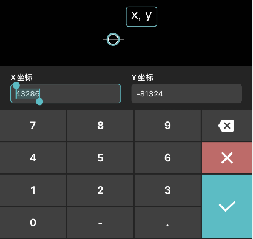
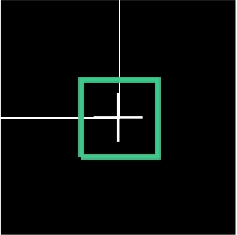
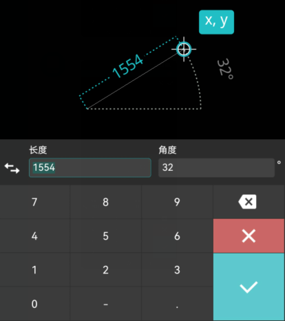
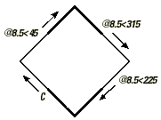
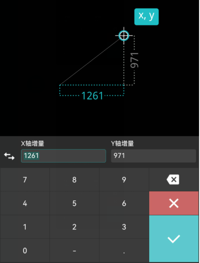
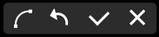

包括：点标记，坐标标记，放大镜，捕捉，辅助图元，面板，关键字，编辑过程中的开关，记录测量结果

点标记可显示当前点的位置。
通过手指点击或拖动创建第一点时，手指抬起的位置显示点标记。
创建第一点后，拖动点标记可调整该点的位置。

坐标标记显示当前点的绝对坐标值，包含X值和Y值。
设置中，命令面板开启状态下，通过点击或拖动创建点时，手指抬起时，显示该点的坐标标记。
点击坐标标记，弹出坐标标记面板，可修改当前点的绝对坐标值。

进行图纸编辑时，长按超过0.5s启动放大镜，放大镜里显示的是触摸区域的放大图形，以便用户观察触摸区域的图形，观察是否捕捉等，如图：

用户可以在设置中放大镜的显示位置：左，右，随动。
用户可根据个人习惯设置放大镜的大小尺寸。
手指抬起，放大镜消失。
最新支持端点，中点，圆心，节点，象限点，交点，插入点，垂足，切点，最近点捕捉。
绘制过程中，拖动某一实体，系统自动捕捉其延伸方向内实体的端点或中点，以便精准相交位置。下图所示为端点捕捉，以绿色方块标注端点:
支持极轴追踪和对象捕捉追踪。

辅助点：
在设置中，对象捕捉追踪开启状态下：
在实体创建、夹点编辑、实体移动等状态下，手指移动经过的捕捉点（停留0.5秒以上）作为临时辅助点，当手指再次移动与此点水平或垂直坐标一致时，系统自动生成辅助线，以便确定该点的位置。
辅助线：
实体的尺寸线和尺寸界线；
实体选择状态下外部矩形框；
对象捕捉追踪辅助线，X/Y轴方向虚线，实体端点辅助点延伸相交辅助线；
实体移动，夹点编辑过程中，显示橡皮筋，以辅助显示夹点、实体移动方向和距离。
辅助参数：
创建实体或编辑实体过程中，显示长度、角度、半径等辅助参数。
面板分命令面板和数字面板。
以单段线的命令面板为例：点击“单段线”命令，根据命令提示在屏幕上指定一点，手指抬起时，弹出单段线命令面板。首次启动默认为极坐标输入模式。可点击前面的切换键从极坐标切换到相对坐标输入模式。
6.1 极坐标
定义：输入一个距离和一个角度, 以指定定位点的极坐标位置。
面板：

案例：使用极坐标, 绘制一个边长为8.5倾斜 45 度的正方形。
操作步骤：
（1） 单击选择绘图工具中的“多段线”命令；
（2） 点击指定正方形的第一个顶点；
（3） 输入第二个顶点的极坐标值: 8.5，45，然后点击“+”；
（4） 输入第三个顶点的极坐标值: 8.5，315，然后点击“+”；
（5） 输入第四个顶点的极坐标值: 8.5，225；
（6） 点击关键字“闭合”命令，闭合正方形。见下图：

6.2 相对坐标
定义：输入X轴方向的增量和Y轴方向的增量指定定位点的相对位置。
面板：

案例：使用相对坐标, 绘制一个边长为 8.5 的正方形。
操作步骤：
（1） 单击选择绘图工具中的“多段线”命令；
（2） 点击指定正方形的第一个顶点；
（3） 输入第二个顶点的相对坐标值: 8.5,0，然后点击“+”；
（4） 输入第三个顶点的相对坐标值: 0,8.5，然后点击“+”；
（5） 输入第四个顶点的相对坐标值: -8.5,0；
（6） 点击关键字“闭合”，闭合正方形。见下图：

关键字出现在命令提示语后面，在命令执行的不同阶段显示的关键字不同。例如绘制多段线时，绘制第一点前有“弧”和“取消”两个关键字，指定了第三点后，出现“弧”，“撤销”，“闭合”，“取消”和“完成”五个关键字。
8.1 参数编辑开关

点击进入参数编辑模式。点击实体的长度，角度等参数编辑框弹出纯数字面板，可修改实体参数。
8.2 夹点编辑开关

点击进入夹点编辑模式，拖动夹点可拉伸实体。
8.3 简单编辑开关

点击进入简单编辑模式，如有夹点，可拖动夹点实现对象缩放；拖动中心的平移图标实现对象平移；拖动旋转图标实现对象旋转。
8.4 圆心解锁

在圆弧参数编辑时，“锁定圆心”开关显示解锁为默认状态，圆弧的起点和端点位置固定，圆心位置可动。可通过调整圆心位置修改圆弧的半径，圆心角。
8.5 锁定圆心

“锁定圆心”开关显示锁定时，圆心位置固定，可通过调整圆弧的起点和端点的位置修改圆弧的半径，起始角和终止角。

启动测量命令后，“记录结果”按钮显示在在测量面板右上角。
点击该按钮，测量结果保存到结果列表。
设置中有“自动记录测量结果”的选项，默认为关闭。